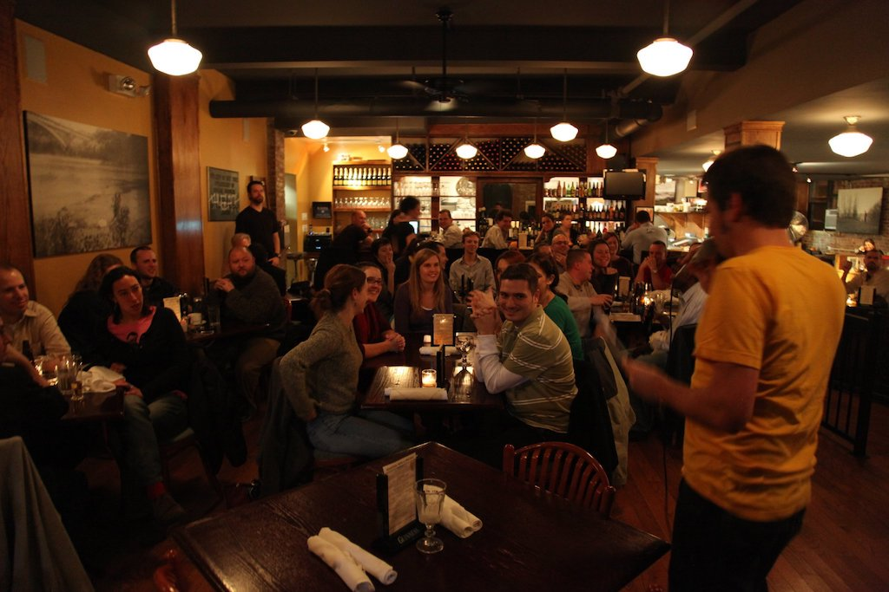
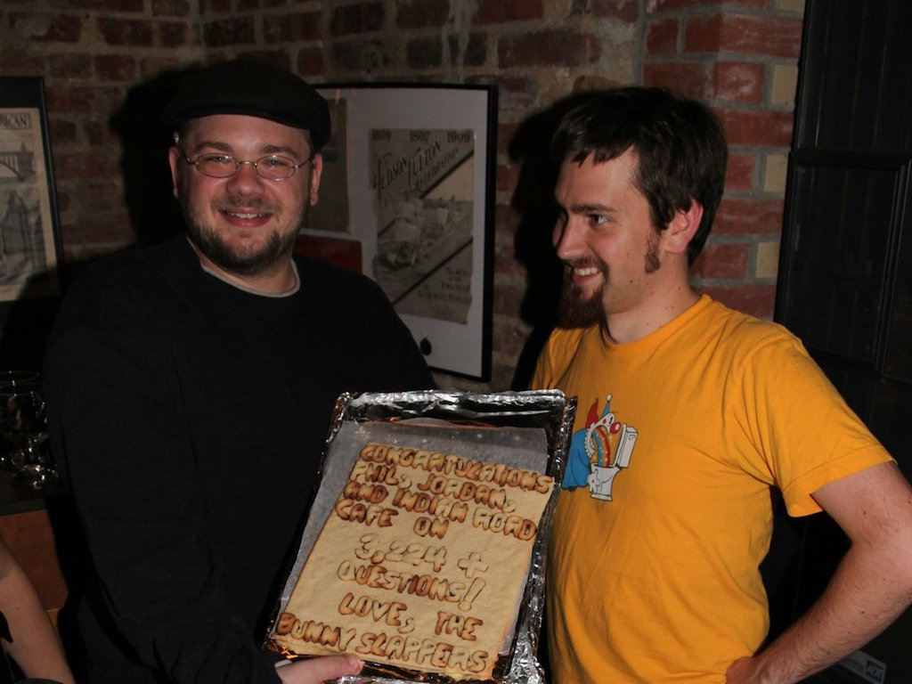
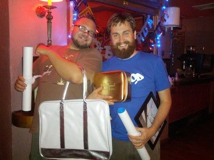

Once upon a time, on a Wednesday night in late 2009, just a little after 8 PM, a respectable family was trying to have a quiet meal together at the Indian Road Café but was driven out by a raucous and rowdy pub quiz. Why did this happen?
Let’s back up a little.
In late 2008 a small stream of nerds had begun showing up to the café on Wednesday nights, lured there by the trivia and beer served up by the Indian Road Café Pub Quiz. By mid 2009, the stream of nerds had become a river. Despite being in its infancy, the IRCPQ was soon bringing in a flood of nerds each week that washed away the more desirable patrons (like the aforementioned family).

a picture of nerds in their Wednesday evening habitat

However, on that Wednesday night in late 2009, as that respectable family walked out the door, a child that looked to be about twelve lagged behind to talk to the quizmasters. Our quiz had piqued the child’s interest and they wanted to be a part of the question-answering and beer-chugging. We confidently said, "Come back when you're old enough to drink, kid. We'll be here. We’re here every Wednesday at 8 PM." If you were that kid, we didn’t forget about you. Enough time has passed that we believe you’re finally old enough and we'd like to invite you to...
The Indian Road Café Pub Quiz Presents: The IRCPQ Tenth Anniversary Retro-spect-acular
Oh, and it's not just that kid who is invited, everyone's invited! The IRCPQ is turning 10 years old, and we're planning the most spectacularly retrospective spectacle imaginable! We’re drawing from our favorite pub quiz memories old and new, and we'd love you all to be there to share this special night with us. This is one you’ll not want to miss.
We’ll be celebrating our anniversary on Wednesday, November 7th at the usual quiz place (600 West 218th St) and the usual quiz time (8 PM). We’re planning to have fabulous prizes, recollections of quizzes past, and perhaps a surprise or two. This will not be an ordinary Wednesday night pub quiz, so please make plans to be there.
Now some sappier stuff...
We may have talked a confident game back in 2009, but even then the idea of a kid coming back in 10 years to find the IRCPQ still going strong was pretty far fetched. Back then we thought our first anniversary was a big deal.

a picture of quizmasters thinking their first anniversary is a big deal

In the last 10 years we’ve gone through so many questions (about 32,240), answers (more than 32,240 if we count the incorrect ones), beers (uncountable), beer sponsors (probably countable), reserved tables (mostly just one actually), trophies (definitely just one), hair-styles (of the head and face), pub quiz regulars (and oh so many irregulars), additional quizmasters (so many), and fabulous prizes, prizes, prizes!

a picture of quizmasters with fabulous prizes, prizes, prizes

We don’t know how to sufficiently show our gratitude to this amazing community for supporting our humble pub quiz for 10 years, so we’ll do the only thing we know how to do. We’ll keep supplying you with trivia and beer.
Every Wednesday at 8 PM.
We'll be here.
Sincerely,
Dr. Jordan and the Evil Mr. Phil
...and OJ the Imposter
...and The Sadiest
...and Professor Lone Star
...and Naomi of the North
...and Mary O’Shag

Yessssss! I really hope that now 22 year old kid shows up. (I'm assuming his parents immediately moved the suburbs, though.)
The suburbs, or at least to Riverdale.
I would like to know how these good-looking young men have stayed young and good-looking.